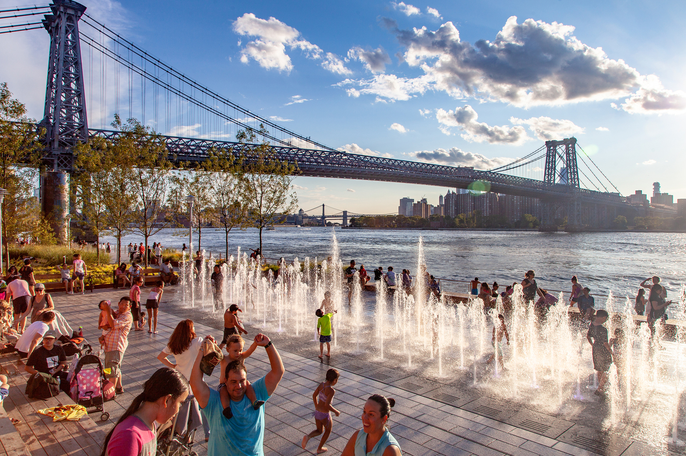

Domino Park is a 5-acre park that was recently renovated along the East River, near the Williamsburg Bridge. It is called Domino Park because it was built on the grounds of the former Domino Sugar Refinery. Included in the park is a playground, restaurant, sprinklers, beach volleyball court and much more.

McCarren Park is in between the neighborhoods Williamsburg and Greenpoint. It is 35 acres which includes baseball fields, basketball courts, playgorunds, dog parks, skate parks, soccer fields, a pool during the summer time and more.
Bushwick Inlet Park is on the Williamsburg Waterfront overlooking Manhattan. There is a big multipurpose field that can be used for soccer, football, lacrosse, frisbee, etc. There is also a dog park there and many benches to sit on and admire the view.